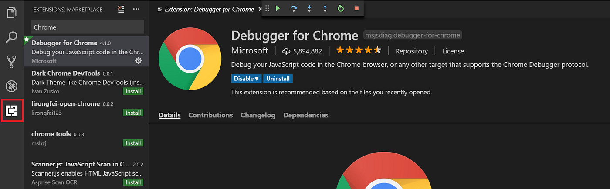

Browser-Debugger – Einblicke in HTML, CSS und Performance

Modernen Webanwendungen begegnen wir täglich: Social-Media-Seiten, Onlineshops, Nachrichtenseiten oder interne Tools im Unternehmen. Doch was genau geschieht „unter der Haube“, wenn wir eine Website aufrufen? Mit dem integrierten Inspektionsmodus (oft auch DevTools genannt) in Browsern wie Google Chrome, Mozilla Firefox oder Microsoft Edge kann man tief in den Aufbau einer Seite eintauchen. Dabei lassen sich nicht nur HTML-Elemente und CSS-Regeln inspizieren, sondern auch Netzwerkverbindungen und Performanceanalysen durchführen. Dieser Artikel beleuchtet die wichtigsten Funktionen und zeigt, warum das DevTools-Fenster zu den unverzichtbaren Werkzeugen eines jeden Webentwicklers – und neugierigen Anwenders – gehört.
1. Aufbau der Developer Tools
Die meisten Browser bieten ähnliche DevTools-Module, die sich in Tabs aufteilen. Dabei haben sich je nach Browser zwar unterschiedliche Bezeichnungen durchgesetzt, aber das Grundprinzip ist stets gleich:
- Elements (oder Inspector): Zeigt den HTML-Baum und das zugehörige CSS. Hier lassen sich einzelne Elemente gezielt auswählen, ändern oder sogar verschieben. Ein Doppelklick auf ein Tag oder eine CSS-Eigenschaft genügt, um den Wert zu bearbeiten oder temporär zu überschreiben.
-
Console: Dient zum Anzeigen von System- und JavaScript-Meldungen.
Hier erscheinen Warnungen, Fehler oder eigene Ausgaben, die der Entwickler
per
console.log()schreibt. Praktisch für das schnelle Debugging. - Network: Zeigt alle Requests, die der Browser an den Server stellt. Dazu gehören HTML-Dateien, CSS, JavaScript, Bilder und andere Ressourcen. Man kann hier sehen, wie groß die einzelnen Dateien sind, in welcher Reihenfolge sie geladen werden und wie lange die Übertragung dauert.
- Performance (oder Timeline): Zeichnet die Aktivitäten des Browsers während einer bestimmten Zeit auf. So lassen sich Engpässe beim Rendering (z. B. aufwendiges Layout- oder JavaScript-Berechnungen) identifizieren.
- Memory (oder Heap): Analysiert die Speichernutzung von Webanwendungen. Hier kann man prüfen, ob sich Speicherlecks (Memory Leaks) einschleichen.
- Application (oder Storage): Bietet Einblicke in den lokalen Speicher des Browsers (Local Storage, Session Storage, Cookies). Auch Web-SQL-Datenbanken oder IndexedDB-Einträge lassen sich hier inspizieren.
- Sources (oder Debugger): Ermöglicht das Durchstöbern und Bearbeiten der geladenen JavaScript-Dateien. Hier kann man Haltepunkte setzen und den Code Schritt für Schritt ablaufen lassen, um Variablenwerte zu beobachten.
- Lighthouse (Chrome) oder Web Vitals: Führen automatische Analysen durch und geben Hinweise zur Leistungsoptimierung (z. B. Ladezeit, SEO, Barrierefreiheit).
2. HTML und CSS im Detail untersuchen
Eines der größten Aha-Erlebnisse für Einsteiger: Klickt man mit der rechten Maustaste
auf ein beliebiges Element einer Webseite und wählt „Untersuchen“ (oder „Inspect“),
öffnet sich ein Teil des DevTools-Fensters, das exakt dieses Element im HTML-Baum
hervorhebt. Daneben sind sämtliche CSS-Regeln zu sehen, die auf dieses Element
angewendet werden, einschließlich Eigenschaften wie color,
margin, padding oder font-size.
In vielen Browsern ist es möglich, direkt im Inspektor Änderungen vorzunehmen:
Ändert man beispielsweise die Farbe von color: #333; auf
color: red;, aktualisiert sich das Seitenlayout unmittelbar.
Diese Änderungen sind jedoch nur lokal im Browser gültig und gehen verloren,
sobald man die Seite neu lädt. Trotzdem ist es extrem nützlich, um
Layout-Probleme schnell zu beheben oder spontane
Design-Ideen zu testen.
3. Netzwerk- und Performance-Analyse
Moderne Webseiten bestehen aus zahlreichen Ressourcen: HTML-Seiten, JavaScript-Bundles, CSS-Dateien, Schriftarten, Bildern und mehr. Im Network-Tab sieht man genau, welche Dateien in welcher Reihenfolge geladen werden und wie groß die jeweilige Datei ist. Die Response-Zeit zeigt, wie lange es dauert, bis der Server die Ressource bereitstellt und wie die Netzwerkverbindung dabei abschneidet. Das ist beispielsweise hilfreich, um Flaschenhälse zu finden oder festzustellen, dass ein bestimmtes Bild viel zu groß (z. B. 4 MB) und dadurch für langsame Seitenladezeiten verantwortlich ist.
Im Performance-Tab kann man einen Mitschnitt der Browseraktivitäten erstellen. Dieser Mitschnitt, auch Recording genannt, zeigt in Form einer Timeline, welche Aufgaben der Browser während des Ladens oder bei Interaktionen ausführt. Sieht man dabei zu viele Repaints, Reflows oder übermäßige CPU-Spitzen, können Optimierungen im Code vorgenommen werden, um das Nutzererlebnis zu verbessern.
4. Debugging von JavaScript
Komplexe Webanwendungen kommen ohne umfangreiches JavaScript selten aus. Im Debugger kann man den Code Zeile für Zeile durchgehen, Variablen inspizieren und Funktionsaufrufe nachvollziehen. Dazu setzt man Breakpoints – Haltepunkte an Stellen, an denen der Code pausieren soll.
Dieser Ansatz ist viel effektiver als bloße „Trial-and-Error“-Meldungen via
console.log(). Ein Breakpoint erlaubt es, den momentanen Zustand
aller relevanten Variablen einzusehen. Auch das Call Stack-Fenster ist
hilfreich: Es zeigt, über welche Funktionsketten man zur aktuellen Stelle
gelangt ist. Auf diese Weise lassen sich Fehler in Event-Handlern,
ungewollte Seiteneffekte oder falsche Zustandsübergänge aufdecken.
5. Speicher- und Sicherheitsaspekte
Im Tab Application (in Chrome) oder Storage (in Firefox)
kann man die im Browser gespeicherten Daten begutachten: Cookies,
Local Storage, Session Storage,
eventuell IndexedDB. Webanwendungen nutzen diese Mechanismen,
um Benutzerinformationen, Einstellungen oder kleine Datenmengen vorzuhalten.
Wer sich damit etwas genauer auskennt, kann so leichter verstehen,
wie eine Seite den Log-in-Status speichert oder welche
konfigurationsrelevanten Daten lokal abgelegt sind.
Gerade beim Thema Sicherheit ist Transparenz wichtig. So kann man kontrollieren, ob sensible Daten in Cookies oder Local Storage „im Klartext“ auftauchen – was generell keine gute Idee wäre. Auch lassen sich hier CORS-Header und andere Sicherheitsmechanismen nachvollziehen, die den Austausch von Daten zwischen verschiedenen Domains regulieren.
6. Praktische Anwendungsfälle
- Frontend-Design testen: Entwickler:innen passen Farben, Schriften oder Positionierungen direkt im Browser an, um schnell zu sehen, ob das Layout so funktioniert, wie gewünscht.
- Responsive Layouts prüfen: In den DevTools gibt es meist einen Device-Modus, der unterschiedliche Bildschirmgrößen oder Geräte (Smartphones, Tablets) simulieren kann.
- Fehlersuche bei Ajax Requests: Der Network-Tab zeigt, ob eine Anfrage korrekt ausgeführt wurde und wie die Antwort vom Server aussieht. So lassen sich fehlerhafte Antworten (HTTP-Status 4xx/5xx) schnell erkennen.
- CSS-Spezifität klären: Der Inspector gibt an, welche CSS-Regeln gerade aktiv sind oder überschrieben wurden. Das hilft, um herauszufinden, warum ein bestimmter Stil nicht greift.
- Performance-Optimierung: Lange Ladezeiten können in Bilder, Schriften oder JavaScript-Dateien begründet liegen. Mit den DevTools identifiziert man gezielt, wo Optimierungspotenzial besteht.
7. Unterschiedliche Browser, ähnliche Funktionen
Obwohl sich die Oberflächen der DevTools in Chrome, Firefox und Edge minimal unterscheiden, ist das Konzept in allen gängigen Browsern ähnlich. Firefox nennt sein Werkzeug oft Inspector, während Chrome auf Elements setzt. Im Kern aber ist das Funktionsspektrum vergleichbar. Wer den Inspektionsmodus in einem Browser zu nutzen gelernt hat, findet sich in anderen Browsern meist schnell zurecht.
Auch Safari auf macOS und iOS bietet eine integrierte Entwicklerkonsole – sie ist nur standardmäßig deaktiviert und muss in den Einstellungen erst freigeschaltet werden (Einstellungen > Erweitert > Menü „Entwicklung“ in der Menüleiste anzeigen).
8. Fazit
Der Browser-Inspektionsmodus ist längst mehr als ein simples Werkzeug zur Fehlersuche. Er dient als Rundum-Paket für Debugging, Leistungsoptimierung und Analyse von Webseiten. Egal, ob man gerade an einem aufwendigen Single-Page-Application-Framework arbeitet oder nur verstehen will, warum eine bestimmte Website „anders“ aussieht als erwartet: Mit ein paar Klicks im DevTools-Fenster gewinnt man tiefe Einblicke in HTML-Strukturen, CSS-Eigenschaften, Netzwerkverkehr und mehr.
Auch für Neulinge lohnt es sich, ab und zu den „Inspect“-Knopf zu drücken und an ein paar Werten zu spielen. Man lernt dabei viel über Webtechnologien und erkennt schnell, was sich im Browser alles abspielt. Wer die DevTools dann weiter erkundet, merkt bald, wie mächtig und vielseitig dieses Werkzeug ist – und warum es im Toolkit eines jeden Web-Entwicklers einen festen Platz hat.